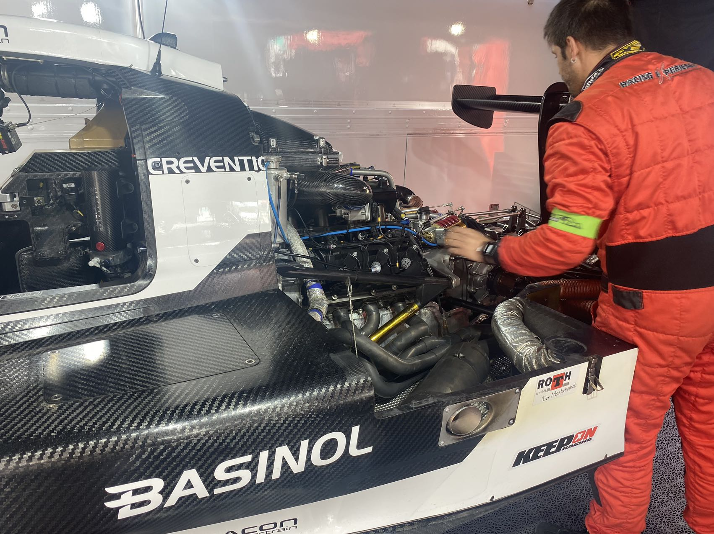

Since 1884.
Engineered in Germany.
Trusted by Automotive and Industrial Applications.
A tradition of German lubrication technology since 1884
More than 140 years of engineering heritage and continuous innovation.
Precision manufacturing philosophy and advanced lubrication technology.
Connecting German technology with worldwide industrial markets.
Extreme Performance Proven on the Track

BASINOL lubrication technology has been tested under demanding racing conditions, where extreme temperature, high speed and mechanical stress require maximum reliability.
Advanced base oils and additive systems provide:
• Excellent wear protection
• Thermal stability
• Engine cleanliness
• Long service performance
From racing environments to industrial applications, BASINOL transfers performance experience into everyday lubrication solutions.
Engineering Excellence Behind Every Product
High-quality synthetic formulations designed for modern engines and industrial equipment.
Reduced friction, improved wear resistance and reliable protection under severe conditions.
Precision, reliability and continuous improvement are the foundation of BASINOL products.
Professional Lubrication Solutions For Multiple Industries
Passenger cars, commercial vehicles, high-performance engines.
Machinery, manufacturing equipment, industrial systems.
Customized lubrication solutions for demanding operating environments.
Engine protection, performance optimization, mobility solutions.
Heavy-duty transportation and fleet operation.
Manufacturing equipment, machinery and energy sectors.
Connecting German Lubrication Technology With Global Partners
Building professional distribution channels and industrial cooperation networks.
Working with manufacturers, engineering companies and technical partners.
Bringing BASINOL technology to worldwide markets.
Become A BASINOL® Global Partner
Develop BASINOL products in automotive, industrial and professional markets.
Cooperate with manufacturers, service providers and technical companies.
Provide customized lubrication solutions for demanding applications.
Connecting German Lubrication Technology With Global Industrial Markets
TOTAL RESOURCES is committed to introducing high-quality international industrial technologies into global markets.
Through strategic cooperation, supply chain integration and market development, BASINOL® provides professional lubrication solutions for automotive and industrial customers.
TOTAL RESOURCES
BASINOL® Global Lubricant Business
Website:
https://totalresources.info/
China Market Development
Industrial Partnership
International Cooperation